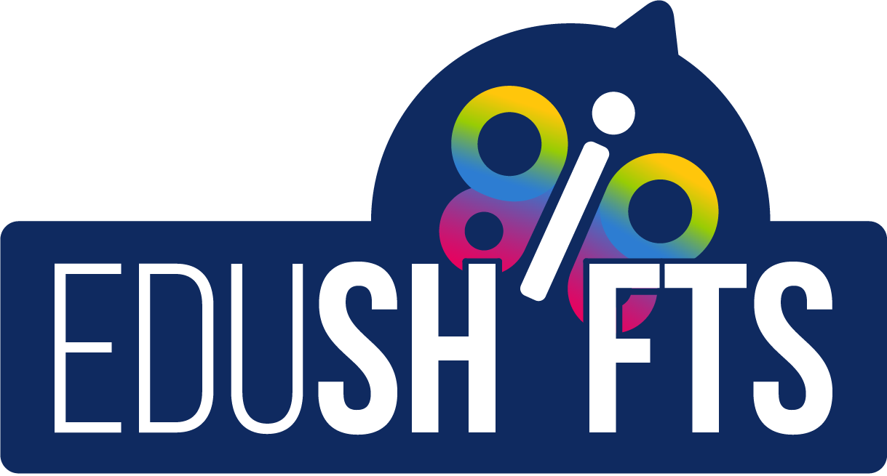

Gamifying a book distribution logistics
EDUshifts Now! book - A global project
This is a project that I made for Edushifts! A global community of innovators in education that I am engaged since 2014 working on different projects and connecting people.
About Edushifts
The EDUshifts is a worldwide movement that connects educators, entrepreneurs, activists, changemakers... is for those who wish to rethink the way we “do” education around the world, and for those who want to see more leaders asking questions about the future of education.
The problem
After the creation of a book about the future of education (written by 16 authors from different countries), we had the challenge to distribute this without expanding a lot of money at the same time we wanted to reinforce the Edushifts values of being a worldwide community of innovators in education.
Objective
This connect people all over the world and also solve the budget problem for book distribution.
In other words we wanted to create a meaningful experience for people that bought the book reinforcing Edushifts movement values and helping the mission of highlighting a vibrant ecosystem of innovative solutions in education around the world and create a network of people committed to making foundational shifts in education.
Solution
We came up with a gamified solution to connect people around the world through the reading experience and book distribution.
For this, the EDUshifts book was sold online for people in different countries and distributed like a game. So it was passed to some education changemakers during the CONANE C(onference of Alternative Education in Brasília - Brazil) that had the mission to read and pass to someone else.
The idea is that the book was going to travel randomly passing from one changemaker to the next until arrive to the owner.
For this we create a platform to track the book. Once you buy and register the book’s code on the EDUshifts Now! platform, you can track its journey and read the stories the people that read and took your book shared with you.
This makes the owner follows the adventures of the book until it gets to its final destination!
Team
Project was made in collaboration with an international team of volunteers, translators, editors, illustrators, designers and film-makers.
My Role
Experience designer and FrontEnd developer.
More about the project
There are 1000 copies available. When they are intentionally passed around the world they reach magnifies to thousands. Each interaction adds value and more stories to the book.
This way we create impactful connections and build a global community of supporters who are seeking a transformation in education.
Read more about the project at: https://www.edushifts.world/book